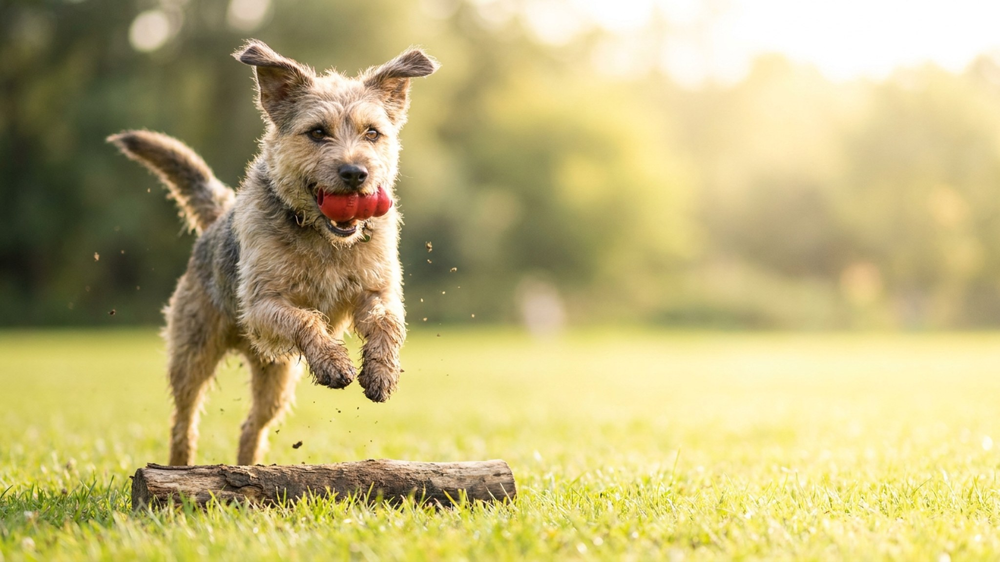

Вы ещё держите поводок в напряжении, а две собаки уже встали боком, шерсть дыбом, ни одна не двигается. Первая встреча задаёт тон на месяцы вперёд — провалить её легко, исправить потом сложнее. Ниже — пять конкретных шагов, которые переводят знакомство с нейтральной территории до спокойного совместного сна, и красные флаги, при которых нужна помощь специалиста.
🐾 Хотите понять, что собака говорит вам?
Опишите ситуацию или пришлите видео в AnimaLife — AI разберёт поведение вашего питомца и подскажет, что делать. Бесплатно, ответ за минуту.
Разобрать поведение → Разобрать в MAX →
У вас iPhone? AnimaLife есть в App Store
Двор, подъезд и квартира — всё это уже «территория» первой собаки. Первое знакомство проводите там, где ни одна из них не была хозяйкой: незнакомый парк, пустая площадка, улица в новом квартале.
Несколько коротких прогулок вместе до заезда домой — лучше, чем одна долгая.
Еда, вода, лежанки, игрушки — главные поводы для конфликта. Правило простое: у каждой собаки своё, и между мисками физическое расстояние.
Охрана ресурсов — замирание над миской, рычание, стойка — это не «плохой характер», а нормальный собачий инстинкт под давлением конкуренции. Ревность проявляется иначе: собака лезет между вами и новой собакой, скулит или теряет аппетит.
Что снижает риск:
Реалистичные ожидания: первые 2–3 недели — период напряжения, это норма. Полная адаптация занимает 1–3 месяца, у собак с сильной территориальностью — до 6 месяцев.
Сигналы, что всё идёт в правильном направлении: собаки игнорируют друг друга без напряжения (это хорошо, не «они не подружились»), могут находиться в одной комнате без стойки и рычания, первая собака не потеряла аппетит и прежние привычки.
Тревожные сигналы: постоянная стойка или рычание в любой ситуации, укусы (даже без крови), первая собака перестала есть или прячется, новая собака не выходит из укрытия спустя неделю.
При тревожных сигналах — не ждите, что «само пройдёт». Это момент обратиться к кинологу-бихевиористу, а не к интернету.
Материал носит информационный характер и не заменяет очную консультацию ветеринара.
🐾 У вашей собаки так же?
Расскажите в AnimaLife, как ведёт себя ваш питомец, — приложение объяснит причину и даст пошаговый план. Бесплатно, без записи к специалисту.
Разобрать свой случай → Разобрать в MAX →
У вас iPhone? AnimaLife есть в App Store
🐾 Понравился разбор?
Подпишитесь на канал — каждый день разбираем по одному тревожному симптому у кошек и собак: что в пределах нормы, а когда пора к врачу. Подпишитесь, чтобы не пропустить разбор, который может спасти здоровье вашего питомца.